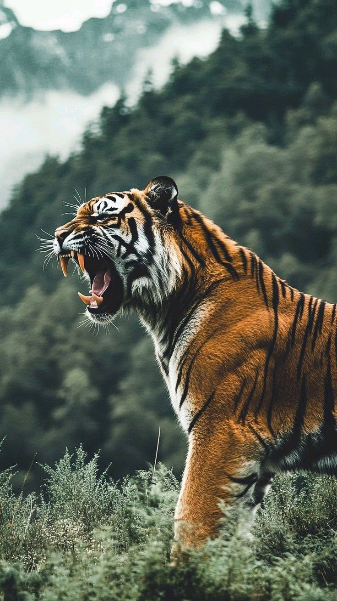
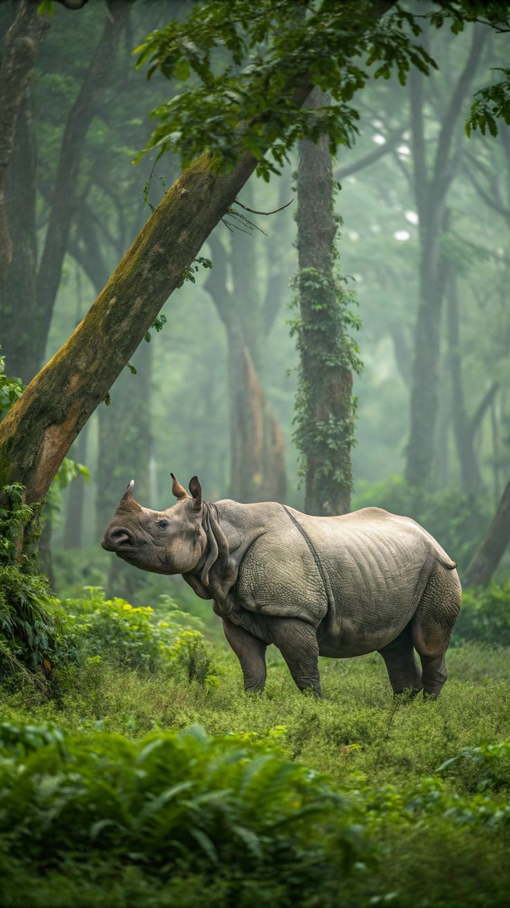
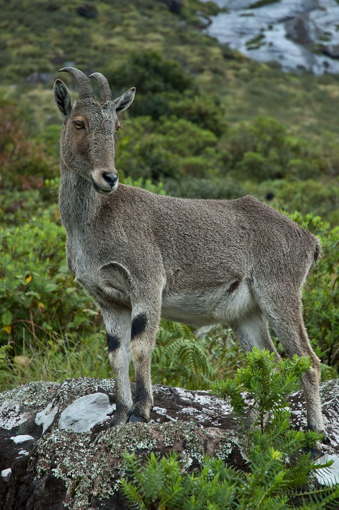
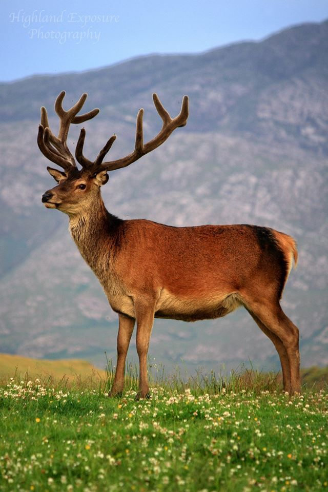
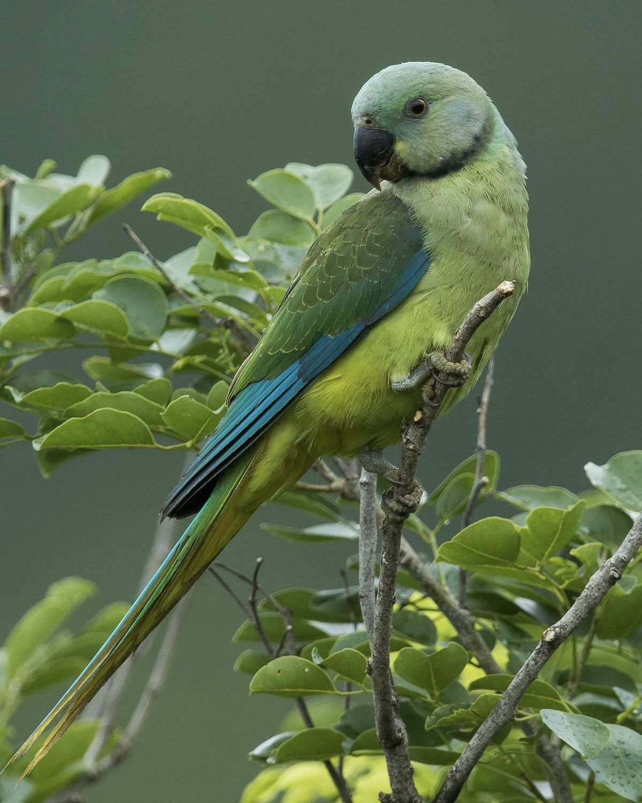
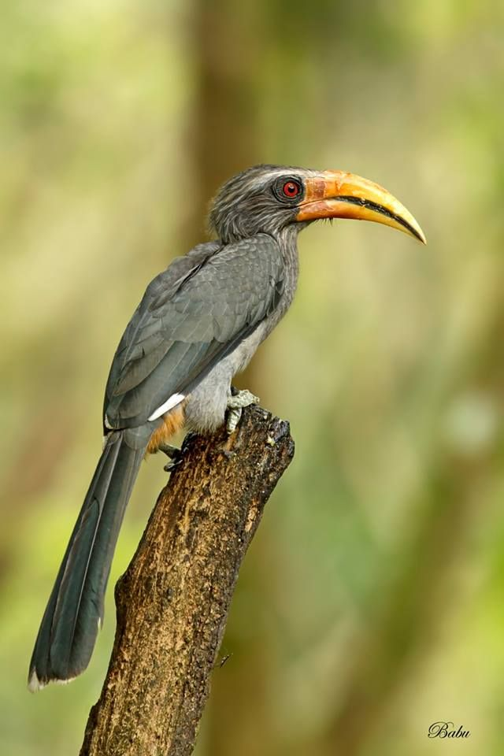
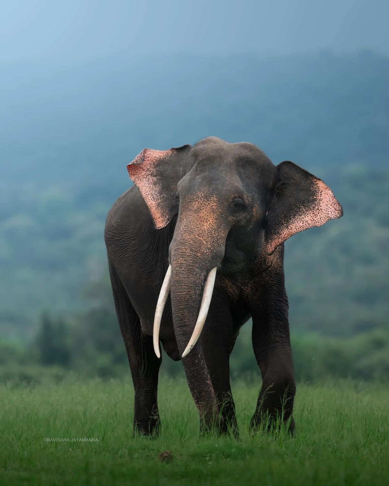
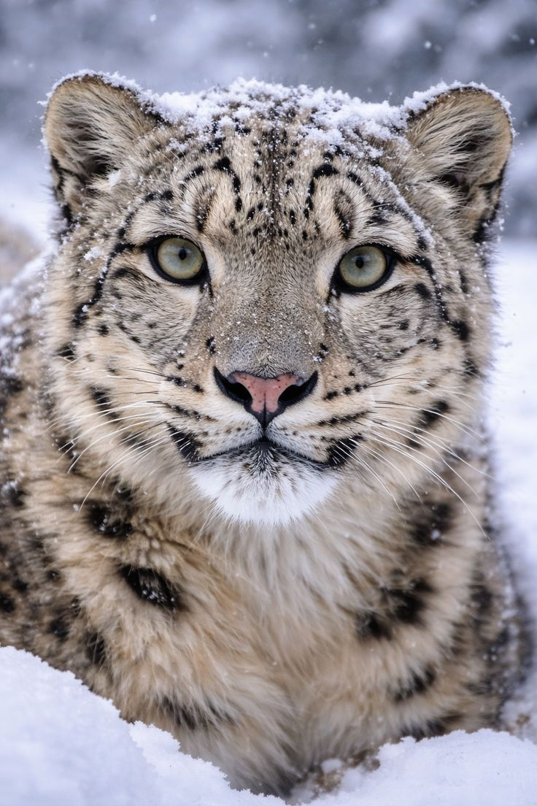
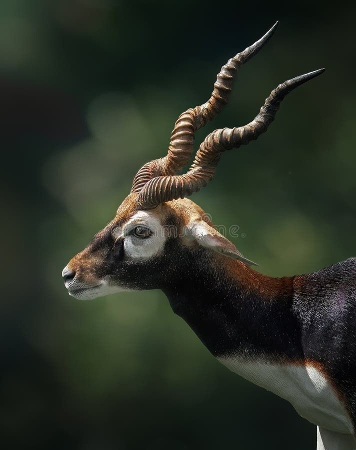

Explore the beauty, diversity, and importance of wildlife from around the world. Our planet is home to millions of fascinating species living in forests, oceans, mountains, and wetlands. Discover amazing animals, view stunning photographs, and learn why protecting wildlife is essential for our future.
Humans have historically tended to separate civilization from wildlife in a number of ways, including the legal, social and moral senses. Some animals, however, have adapted to suburban environments. This includes urban wildlife such as feral cats, dogs, mice, and rats. Some religions declare certain animals to be sacred, and in modern times, concern for the natural environment has provoked activists to protest against the exploitation of wildlife for human benefit or entertainment.









Wildlife encompasses all undomesticated animal species—including mammals, birds, reptiles, amphibians, and fish—that live and grow in their natural habitats without being introduced by humans.
It is a critical component of the planet's biodiversity, playing a vital role in maintaining ecological balance through predator-prey relationships, pollination, and seed dispersal.